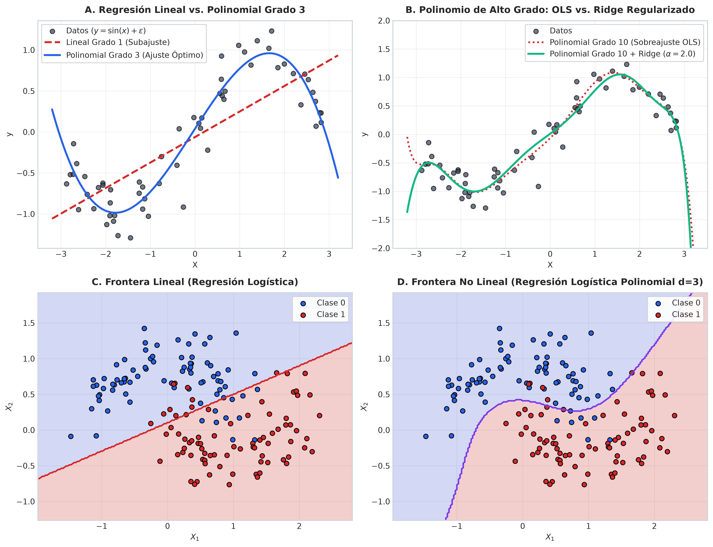
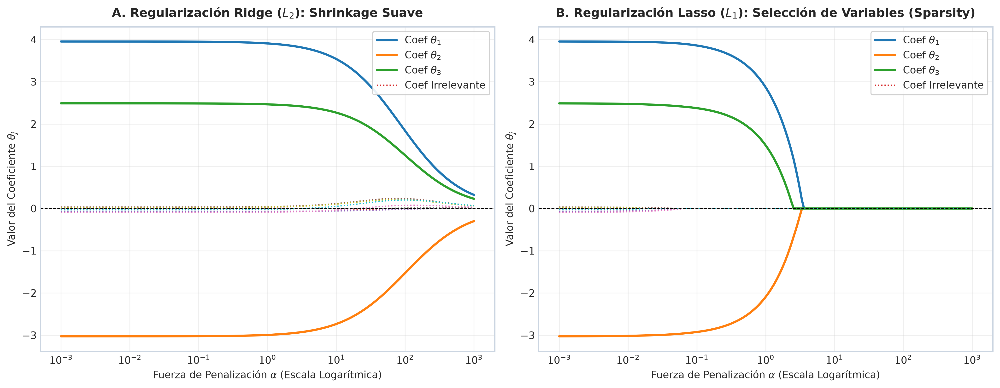
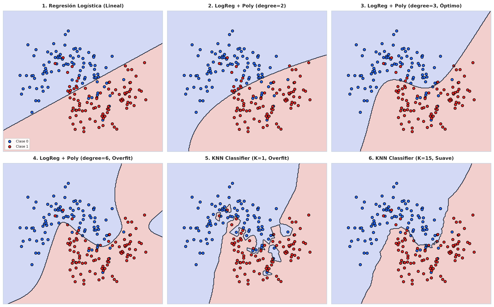
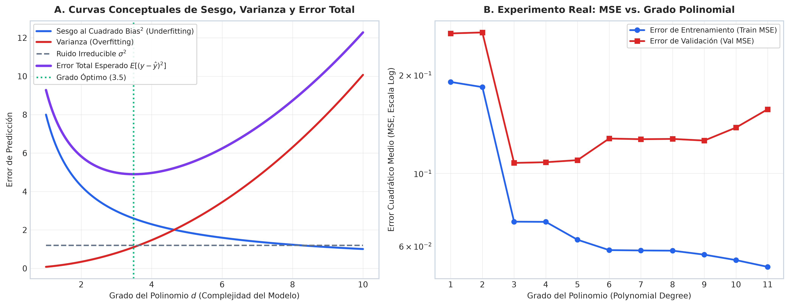
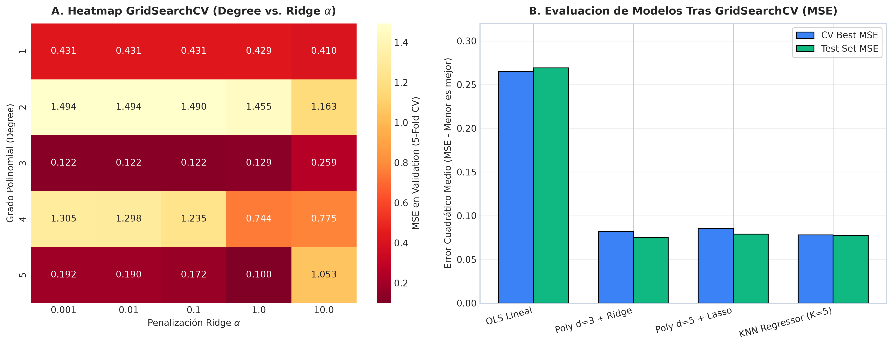

Capacidad de Representación, Bias-Variance Tradeoff, Data Leakage y Optimización de Hiperparámetros
Ingeniería Electrónica — Séptimo Semestre
Asumen una relación aditiva lineal entre variables entradas $x$ y salida $y$:
$$\hat{y} = \theta_0 + \theta_1 x_1 + \dots + \theta_n x_n = \theta^T x$$
Mapean fronteras complejas o arbitrarias mediante combinaciones polinomiales o estimaciones locales:

Fallo de la Regresión Lineal OLS (Arriba Izq.) vs. Curvatura Polinomial d=3 (Arriba Der.) y Frontera Logística Polinomial No Lineal (Abajo Der.)
Cuando tenemos muchas características ($n \gg m$) o colinealidad, Mínimos Cuadrados Ordinarios (OLS) sobreestima la magnitud de los pesos $\theta$, resultando en una **varianza gigante** y sensibilidad extrema al ruido.
Añade la suma de los cuadrados de los coeficientes:
$$J(\theta) = \text{MSE}(\theta) + \lambda \sum_{j=1}^n \theta_j^2$$
Comprime los pesos suavemente hacia cero sin anular ninguno por completo.
Añade la suma del valor absoluto de los coeficientes:
$$J(\theta) = \text{MSE}(\theta) + \lambda \sum_{j=1}^n |\theta_j|$$
Fuerza coeficientes irrelevantes exactamente a 0.0 (Selección de Características).
La solución en forma cerrada modifica la matriz normal agregando $\lambda I$:
$$\hat{\theta}_{\text{Ridge}} = (X^T X + \lambda I)^{-1} X^T y$$
Garantiza que la matriz sea siempre invertible, resolviendo la multicolinealidad.
Combina ambas penalizaciones controladas por el parámetro $\alpha$ y la proporción $r \in [0, 1]$:
$$J(\theta) = \text{MSE}(\theta) + r \alpha \sum_{j=1}^n |\theta_j| + \frac{1-r}{2} \alpha \sum_{j=1}^n \theta_j^2$$
Ideal cuando existen grupos de variables fuertemente correlacionadas.

Trayectoria de Coeficientes vs Fuerza de Penalización $\alpha$: Contraimiento suave continuo en Ridge ($L_2$) vs Anulación exacta a Cero en Lasso ($L_1$)
Un modelo lineal puede aprender relaciones no lineales si transformamos las entradas originales $x$ mediante combinaciones de potencias usando PolynomialFeatures(degree=d):
$$\phi(x) = [1, x_1, x_2, x_1^2, x_1 x_2, x_2^2, \dots, x_1^d, x_2^d]^T$$
Al aplicar regularización $L_2$ o $L_1$ sobre una expansión polinomial de alto grado ($d=8$ o $d=10$):
El hiperparámetro $\alpha$ (o $\lambda$) actúa como un "freno" que impide que el polinomio oscile violentamente entre puntos de datos cercanos.
Algoritmo no paramétrico basado en la métrica de distancia Euclidiana o Manhattan:
$$d(x, z) = \sqrt{\sum_{j=1}^n (x_j - z_j)^2}$$
Asigna mayor peso de voto a los vecinos más cercanos:
$$w_i = \frac{1}{d(x, x_i)}$$
Permite fronteras más adaptativas manteniendo suavidad.

Fronteras de Decisión sobre el dataset Moons: Lineal vs. Polinomial Grado 2, 3, 6 vs. KNN (K=1 vs K=15)
Para cualquier modelo de regresión $\hat{f}(x)$ entrenado sobre un conjunto $D$, el error cuadrático medio esperado en un punto $x$ no visto se descompone en:
$$E\left[(y - \hat{f}(x))^2\right] = \underbrace{\left(E[\hat{f}(x)] - f(x)\right)^2}_{\text{Bias}^2 \text{ (Sesgo)}} + \underbrace{E\left[\left(\hat{f}(x) - E[\hat{f}(x)]\right)^2\right]}_{\text{Variance } (\text{Varianza})} + \underbrace{\sigma^2}_{\text{Ruido Irreducible}}$$
Grado polinomial insuficiente ($d=1$). Error elevado tanto en entrenamiento como en validación.
Grado polinomial excesivo ($d \ge 8$). Error bajo en train, pero el error en test se dispara por oscilaciones descontroladas.

Descomposición Teórica de Error (Izquierda) y Experimento Real de MSE vs Grado Polinomial (Derecha)
Ocurre cuando información del conjunto de evaluación se filtra en la fase de entrenamiento. Ejemplo típico: calcular `StandardScaler.fit()` o `PolynomialFeatures.fit()` en todo el dataset antes de dividir en pliegues de CV.
El dataset de entrenamiento se divide en $K$ partes iguales (pliegues). En cada iteración $k$, el modelo se entrena sobre $K-1$ pliegues y se evalúa en el pliegue sobrante. El preprocesamiento debe ajustarse **únicamente** sobre los $K-1$ pliegues de entrenamiento de cada iteración.
Un Pipeline encadena secuencialmente transformadores (`StandardScaler`, `PolynomialFeatures`) con un estimador final:
from sklearn.pipeline import Pipeline
from sklearn.preprocessing import StandardScaler, PolynomialFeatures
from sklearn.linear_model import Ridge
pipe = Pipeline([
('scaler', StandardScaler()),
('poly', PolynomialFeatures(degree=3)),
('ridge', Ridge(alpha=1.0))
])Al pasar un Pipeline a cross_val_score o GridSearchCV, scikit-learn ejecuta automáticamente:
scaler.fit_transform() y poly.fit_transform() sobre el Train Fold de la iteración.scaler.transform() y poly.transform() sobre el Validation Fold de la iteración.Dada una lista de hiperparámetros declarados en una cuadrícula cartesiana (param_grid), `GridSearchCV` evalúa sistemáticamente **todas las combinaciones posibles** utilizando Validación Cruzada de $K$ pliegues.
param_grid = {
'poly__degree': [1, 2, 3, 4, 5],
'ridge__alpha': [0.001, 0.01, 0.1, 1.0, 10.0]
}
# Total de combinaciones: 5 x 5 = 25 modelos
# Con 5-Fold CV: 25 x 5 = 125 ajustes de modelobest_params_: Combinación que minimizó el MSE de CV.best_score_: Puntuación de error promedio en CV.best_estimator_: Modelo re-entrenado sobre todo el Train Set.
Mapa de Calor del Espacio de Hiperparámetros (Grado Polinomial vs Ridge Alpha) y Desempeño en Test Set
| Característica | GridSearchCV | RandomizedSearchCV |
|---|---|---|
| Estrategia | Exhaustiva (Cuadrícula completa) | Muestreo estocástico aleatorio |
| Número de Evaluaciones | $N_1 \times N_2 \times \dots \times N_k$ (Exponencial) | Fijo (Definido por n_iter) |
| Espacio de Búsqueda | Discreto (Listas de valores) | Continuo o Discreto (Distribuciones) |
| Eficiencia Computacional | Lenta para espacios grandes | Alta eficiencia en dimensiones elevadas |
| Uso Recomendado | Pocos hiperparámetros (1 a 3) | Muchos hiperparámetros continuos |
Reserva el 20-30% del dataset original como **Holdout Test Set**. Mantén este conjunto guardado bajo llave hasta la evaluación final.
Empaqueta todo el preprocesamiento (`StandardScaler`, `PolynomialFeatures`) y el estimador dentro de un `Pipeline` limpio.
Aplica `GridSearchCV` o `RandomizedSearchCV` únicamente sobre el conjunto de entrenamiento usando 5-Fold CV.
Evalúa el `best_estimator_` obtenido en el **Holdout Test Set** para reportar métricas realistas en producción.
| Algoritmo | Frontera de Decisión | Sensibilidad Escala | Sensibilidad Outliers | Riesgo Overfit |
|---|---|---|---|---|
| Regresión Logística Lineal | Lineal (Hiperplano) | Alta | Moderada | Bajo |
| Logística Polinomial ($d \ge 2$) | Curva Suave Contínua | Muy Alta | Muy Alta | Muy Alto (con $d$ elevado) |
| Polinomial + Ridge / Lasso | Curva Suave Contínua | Muy Alta | Moderada | Controlado mediante $\alpha$ |
| KNN Classifier / Regressor | Local Irregular | Muy Alta | Alta (con $K=1$) | Alto (con $K=1$) |
Polinomios de alto grado capturan curvaturas no lineales pero requieren regularización ($L_1/L_2$) para evitar oscilaciones de sobreajuste.
El uso de Pipeline es obligatorio para evitar la Fuga de Datos durante la transformación polinomial y la validación cruzada.
Utiliza GridSearchCV para encontrar la combinación óptima de grado polinomial $d$, penalización $\alpha$ y vecinos $K$.